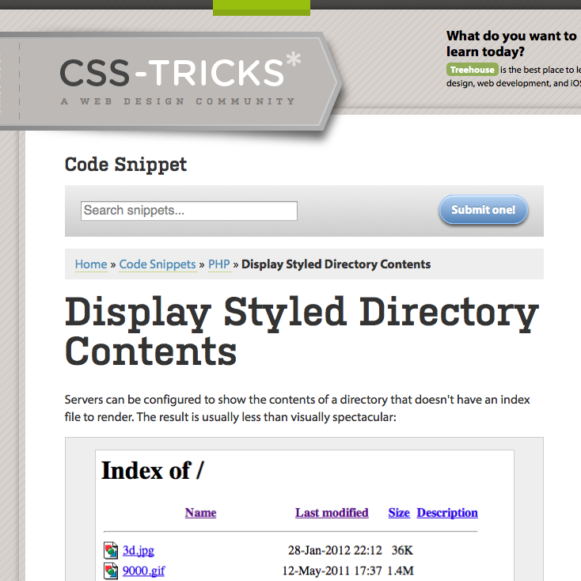

Styled Directory Listings

I love Ethan Marcotte/@beep's bukk.it. From what I can tell, it serves various purposes for him. Possibly the most entertaining purpose, is the image-only Twitter conversations he has he has with them, where those images play center stage. Completely inspired by this collection of images, a while ago I started collecting my own set of images. My collection is lots smaller than his, and seriously pales in comparison. Despite that, I wanted my collection to look better to the casual browser. With that in mind, I found this handy set of files, which does just what I wanted - list files, just in a way that looks nicer than the apache system default (and fittingly enough, mentions bukk.it (though not by name) as its base example of a file listing). I quickly put these files in place over at g.lbs.im. I added a couple pieces that would display the file size in a flexible way (in KB, MB, GB, etc), formats the date better, and also hides a couple system files that have to appear (thanks to my host). If you end up wanting those additions, I'm happy to share, just drop me a line.